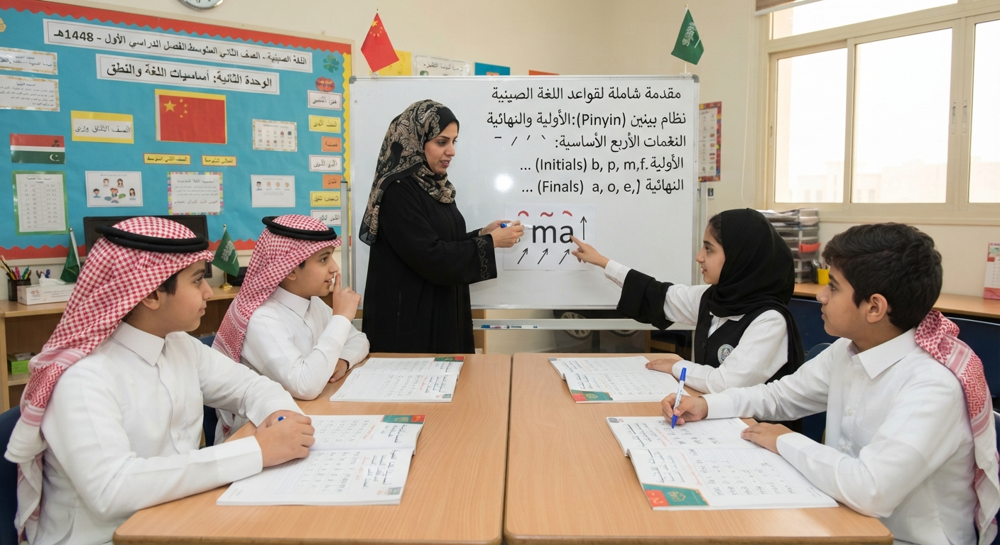

القسم الأول: الوحدات الأساسية (Units 1-4)
الوحدة الأولى
التحيات والتعارف الأساسي
يتعلم الطالب أساسيات التحية باللغة الصينية، وكيفية السؤال عن الاسم والعمر والبلد، مع التدرب على النطق الصحيح والتعارف مع الآخرين.

الوحدة الثانية
أساسيات اللغة والنطق
مقدمة شاملة لقواعد اللغة الصينية، نظام بينين (Pinyin)، الحروف الأولية والنهائية، والنغمات الأربع الأساسية في اللغة الصينية.
الوحدة الثالثة
الضمائر، الأرقام، والاستفهام
تعلم الضمائر الأساسية، الأعداد من 1 إلى 100، أدوات الاستفهام، وكيفية السؤال عن العمر والعمل والتاريخ باللغة الصينية.
الوحدة الرابعة
الأزمنة والأفعال
شرح مفصل للأزمنة في اللغة الصينية: الماضي، المضارع، المستقبل، وكيفية صياغة جمل الأمر والنهي باستخدام الأدوات المناسبة.
الدروس التفصيلية
الوحدة الأولى: التحيات والتعارف الأساسي
الدرس الأول: من كورس المفردات - التحية
يتناول هذا الدرس أساسيات التحية باللغة الصينية، وكيفية قول "مرحباً" واستخدامها في المواقف اليومية مع النطق الصحيح.
شرح مفصل تحميل الملخص (PDF)الدرس الثاني: AI小语، مرحباً!
مقدمة تفاعلية وممتعة مع الشخصية التعليمية الذكية لتعلم أساسيات التحية والترحيب باللغة الصينية.
شرح مفصل تحميل الملخص (PDF)الدرس الثالث: ما اسمك باللغة الصينية؟
يتعلم الطالب كيفية السؤال عن الاسم والإجابة عنه باستخدام الجملة الأساسية، مع التدرب على نطق الكلمات.
شرح مفصل تحميل الملخص (PDF)الدرس الرابع: كيف نتعرف على الآخرين | التعارف
محادثات عملية للتعارف، تشمل السؤال عن الاسم، العمر، والبلد، وكيفية تقديم النفس للآخرين بأدب.
شرح مفصل تحميل الملخص (PDF)الوحدة الثانية: أساسيات اللغة والنطق
الدرس الخامس: أساسيات اللغة الصينية في دقائق
دليلك السريع والشامل للبداية الصحيحة في تعلم اللغة الصينية، يغطي الأساسيات الهامة للمبتدئين.
شرح مفصل تحميل الملخص (PDF)الدرس السادس: مقدمة في قواعد اللغة الصينية
مقدمة مبسطة لقواعد اللغة الصينية، وتركيب الجملة الأساسي (فاعل + فعل + مفعول به).
شرح مفصل تحميل الملخص (PDF)الدرس السابع: ما هي الرموز و بين ين (Pinyin)
شرح نظام بينين (Pinyin) لتمثيل نطق الحروف الصينية، وأهميته كأساس للتعلم الصحيح.
شرح مفصل تحميل الملخص (PDF)الدرس الثامن: حروف الأبجدية الصينية
تفصيل الحروف الأولية (Initials) وكيفية نطقها بشكل صحيح وفقاً للمعايير الصينية.
شرح مفصل تحميل الملخص (PDF)الدرس التاسع: Initial final tones | النغمات
شرح النغمات الأربع في اللغة الصينية وكيفية تغيير النغمة لتغيير معنى الكلمة تماماً.
شرح مفصل تحميل الملخص (PDF)الدرس العاشر: قواعد النغمات والحروف المتحركة
تطبيق عملي على قواعد النغمات والحروف المتحركة (Finals) في نظام بينين.
شرح مفصل تحميل الملخص (PDF)الدرس الحادي عشر: كيف يتكون البنين (Initial & Final)
مراجعة شاملة ومعمقة لكيفية تكوين المقاطع الصوتية من دمج الحروف الأولية والنهائية.
شرح مفصل تحميل الملخص (PDF)الوحدة الثالثة: الضمائر، الأرقام، والاستفهام
الدرس الثاني عشر: أدوات الاستفهام والضمائر
شرح شامل لضمائر المتكلم والمخاطب والغائب، وأدوات الاستفهام الأساسية مثل (من، ماذا، أين، متى).
شرح مفصل تحميل الملخص (PDF)الدرس الثالث عشر: الأعداد باللغة الصينية
تعلم الأرقام من 1 إلى 100 وكيفية استخدامها في العد والحسابات البسيطة والمحادثات اليومية.
شرح مفصل تحميل الملخص (PDF)الدرس الرابع عشر: كيف نسأل عن العمر باللغة الصينية
كيفية السؤال عن العمر والإجابة عنه بشكل صحيح ومهذب باستخدام الجمل المناسبة لكل فئة عمرية.
شرح مفصل تحميل الملخص (PDF)الدرس الخامس عشر: السؤال عن العمل والعمر والبلد
تطبيق عملي شامل لطرح الأسئلة الشخصية والتعرف على الآخرين بطريقة مهذبة ومنظمة.
شرح مفصل تحميل الملخص (PDF)الدرس السادس عشر: كيف نسأل عن التاريخ باللغة الصينية
كيفية السؤال عن التاريخ واليوم والسنة باللغة الصينية وترتيب عناصر الجملة الزمنية بشكل صحيح.
شرح مفصل تحميل الملخص (PDF)الوحدة الرابعة: الأزمنة والأفعال
الدرس السابع عشر: الفعل الماضي بالصينية
كيفية التعبير عن الزمن الماضي في اللغة الصينية واستخدام أدوات مثل "了" (le) للإشارة إلى اكتمال الفعل.
شرح مفصل تحميل الملخص (PDF)الدرس الثامن عشر: الفعل المضارع بالصينية
كيفية صياغة الجمل في الزمن المضارع والتعبير عن الأفعال المستمرة باستخدام "在" (zài).
شرح مفصل تحميل الملخص (PDF)الدرس التاسع عشر: الفعل المستقبل بالصينية
كيفية التعبير عن المستقبل والنية في القيام بفعل ما باستخدام أدوات مثل "会" (huì) أو "要" (yào).
شرح مفصل تحميل الملخص (PDF)الدرس العشرون: فعل الأمر والنهي
كيفية صياغة جمل الأمر والنهي باللغة الصينية باستخدام "请" (qǐng) للطلب المهذب و "别" (bié) للنهي.
شرح مفصل تحميل الملخص (PDF)اختبر معلوماتك في اللغة الصينية (تصحيح تلقائي)
Test your Chinese skills with these questions!
الانتقال إلى بنك الأسئلة الشامل